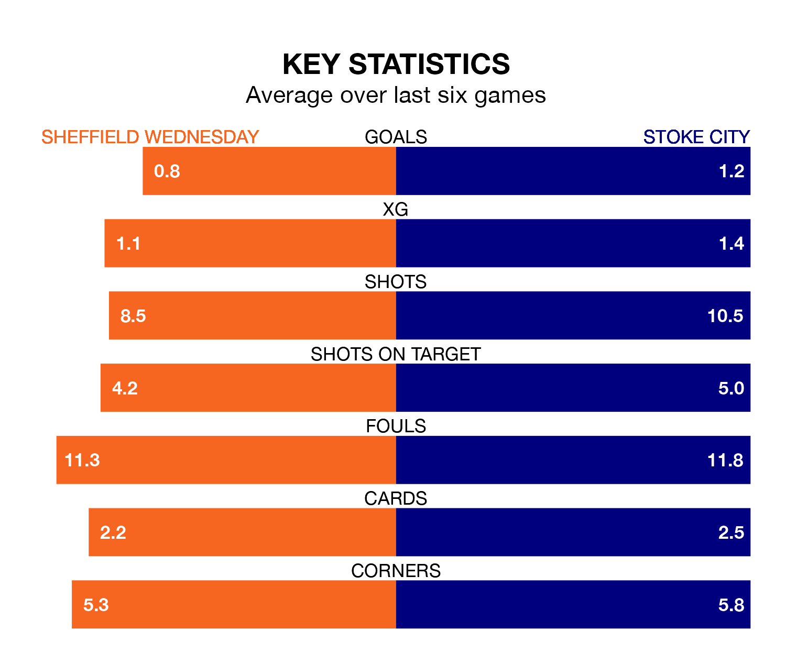

Sheffield Wednesday host Stoke City on Saturday at Hillsborough in EFL Championship.
In their last league match, on Tuesday, Wednesday drew with Norwich City 2-2 at home, with goals from Michael Ihiekwe and Michael Smith.
Stoke lost, 3-0 away at Swansea City on Wednesday.
Wednesday are 22nd in the table after 42 games, of which they have won 12 and drawn seven, earning 43 points.
Stoke are three places ahead of the Owls in 19th, with 12 wins and 10 draws putting them on 46 points.
In the last 10 years, Wednesday and Stoke have played each other on eight occasions. Wednesday won two of them, Stoke three, and they drew three times.
On average, the Owls scored 0.8 goals and the Potters 1.0 in those matches.
Their last meeting was on December 9, when Wednesday won 1-0 away.
The home team are in disappointing form in EFL Championship, with one win and two draws from their last six games.
With two wins and two draws over that period, City's form is better – they have taken eight points from 18, compared to Wednesday's five.
With 35 goals in 42 games so far this season, Wednesday are the league's second-lowest scorers with 0.8 goals per game. And they are conceding more than average, letting in 66 goals at a rate of 1.6 per game.
The Potters are also below average scorers, with 1.0 goal per game, compared to a league average of 1.3. They have conceded 1.4 goals per game.
Updated: 10:01 (UTC), 12/04/24